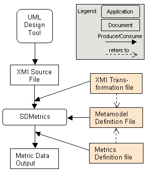

To control the way SDMetrics processes your UML designs, SDMetrics
requires a set of project files, such as the file containing the definition of the
metrics to be calculated. Figure 5 illustrates the role of
the project files:
 Figure 5: SDMetrics Project Files
XMI Source File The XMI file that stores the UML design you
want to analyze. You create this XMI file with your UML modeling tool
or some other application that exports XMI files.
Metamodel Definition File The SDMetrics metamodel (see
Section 7.1 "SDMetrics Metamodel") defines which UML elements SDMetrics knows about. The
metamodel provides the basis for the definition of the metrics to be
calculated.
XMI Transformations File The XMI transformations file (see
Section 7.2 "XMI Transformation Files") defines how the model elements in the SDMetrics
metamodel are retrieved from the XMI source file.